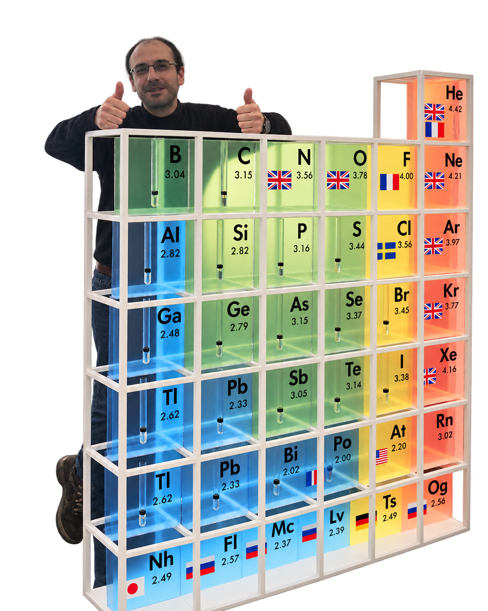

Christian Tantardini
Research Scientist
Center for Integrative Petroleum Research
King Fahd University of Petroleum & Minerals
Research areas
- Physical Chemistry
- Solid State Physics
- Fluid Dynamics
- Machine Learning
- AI
